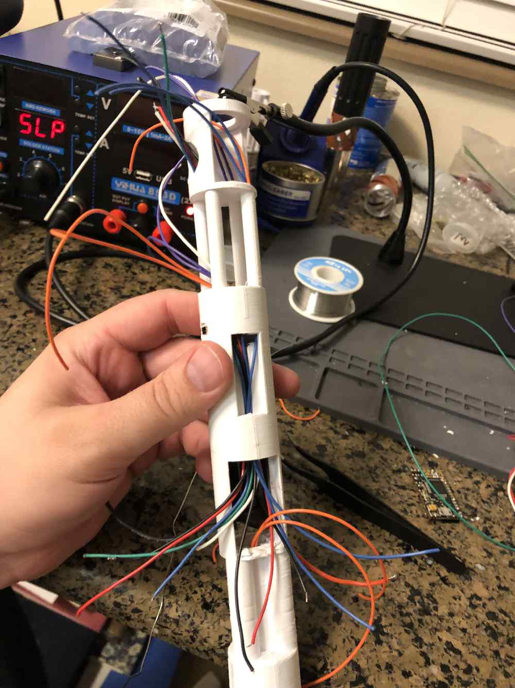

Blog
Ashida Wii Portable
This is one of my crowning achievements. This is a full Nintendo Wii console portabalized into a handheld-style console. Boasting roughly two hours of battery life and the full capability of the Nintendo Wii console, it is hard to believe that this device is even real. I have access to all of my Wii and GameCube games at any time, anywhere I go. Or, if I really wanted to, I could connect Wii Remotes via bluetooth and play Mario Kart Wii with friends. Additionally, a "tethered" mode is also supported, allowing you to play your games on a television.

Custom Neopixel Lightsaber
Just like many young boys from my generation, it was a common dream of mine that Jedi Knight would find me and tell me that I was the chosen one and take me off to study the Jedi ways. While that never came true, I was able to design and build my own lightsaber. This creation uses a Crystal Focus CFX Soundboard at its core and has a brilliantly bright Neopixel blade, which I also was able to construct. I designed the 3D-printed housing that holds all of the wiring as well. From start to finish, I designed every part of this project, and am very proud of the result.